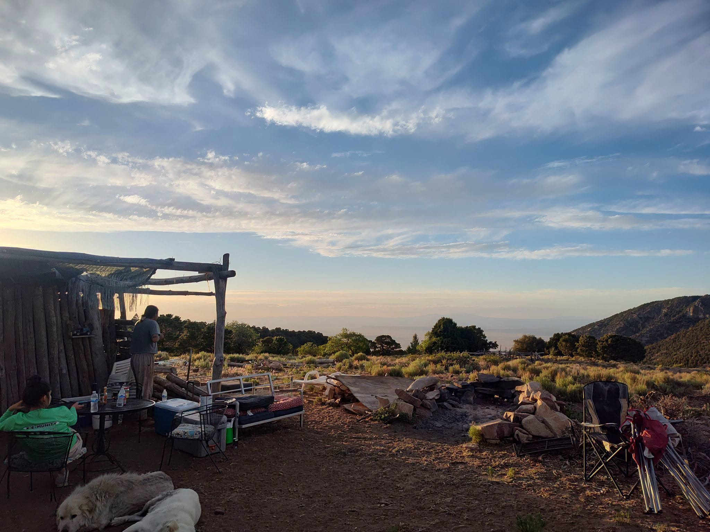
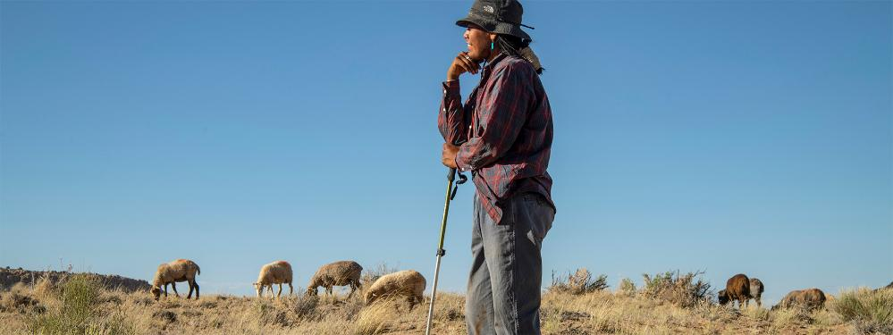
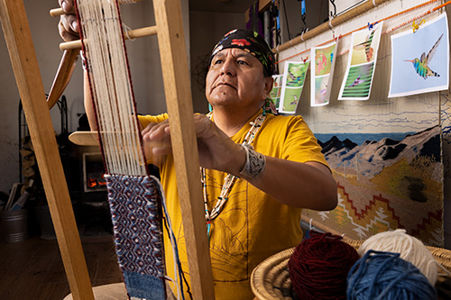

Fiber
From fleece to spindle to loom. Apprentices shear, card, spin, dye with plants gathered from the land, and weave — the full sheep-to-loom way.

Kady Youth Sheep Camp was not founded — it is continued. The flock is Shimá's flock. The camps are the family's seasonal camps. The name is literal: this is where the sheep have always summered, and where the young still learn beside their elders.
From fleece to spindle to loom. Apprentices shear, card, spin, dye with plants gathered from the land, and weave — the full sheep-to-loom way.

Churro has sustained Diné families for centuries. The camp keeps that food tradition alive with the Slow Food Presidium — good, clean, and fair.

Roy teaches a reciprocity: the sheep keep the land strong. Where herding has ceased, he has watched the beneficial plants leave and invasives move in. Herding is stewardship.
Shimá learned at the edge of her mother's loom — watching, then secretly weaving rows and undoing them before anyone could see; later, a hidden loom up on the mesa. A generation on, Roy learned the same way, at her loom, at nine years old.
The camp teaches the way this family has always taught: watch, try, undo, try again — beside someone who loves you.


The apprenticeship's proof of concept: a sheep-to-loom practitioner who is self-sufficient through his weaving and preparing to take over the flock. The chain Shimá kept is not a memory — it is hiring.
The Navajo-Churro is North America's earliest domesticated sheep breed — central to Diné sustenance, spirituality, and weaving. It was nearly exterminated twice: in the scorched-earth campaign of the 1860s, and again in the federal livestock reduction of the 1930s. By the 1970s roughly 450 animals remained. Community-led restoration rebuilt the flocks.
This camp lives inside that revival.

Diné weaver and shepherd of Teec Nos Pos. Coordinator of the Navajo-Churro Sheep Presidium with Slow Food. He has taught weaving at Navajo Technical University's Teec Nos Pos campus, served his chapter as Mayor-Elect, and teaches weavers who come to the camp from around the world — anyone willing to learn.
Family history on this page is drawn from three Arizona Highways features by Sunnie R. Clahchischiligi — "The Great Horseman They Called Kady" (2021), "Shimá's Legacy" (2022), and "According to Custom" (2023) — which are linked, never reproduced.
 KADY YOUTH SHEEP CAMP · TEEC NOS POS, AZ · 36.9°N 109.1°W
KADY YOUTH SHEEP CAMP · TEEC NOS POS, AZ · 36.9°N 109.1°W